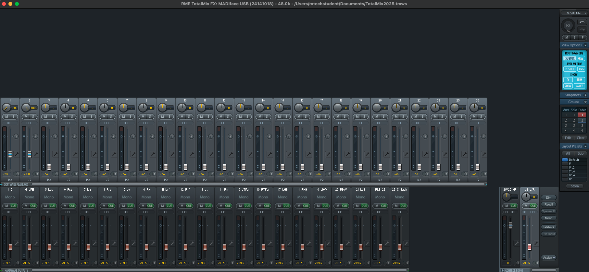
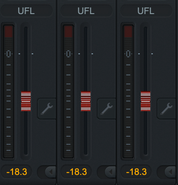
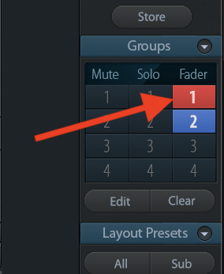
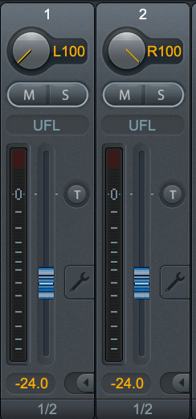
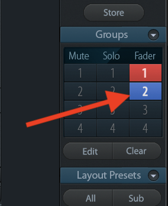
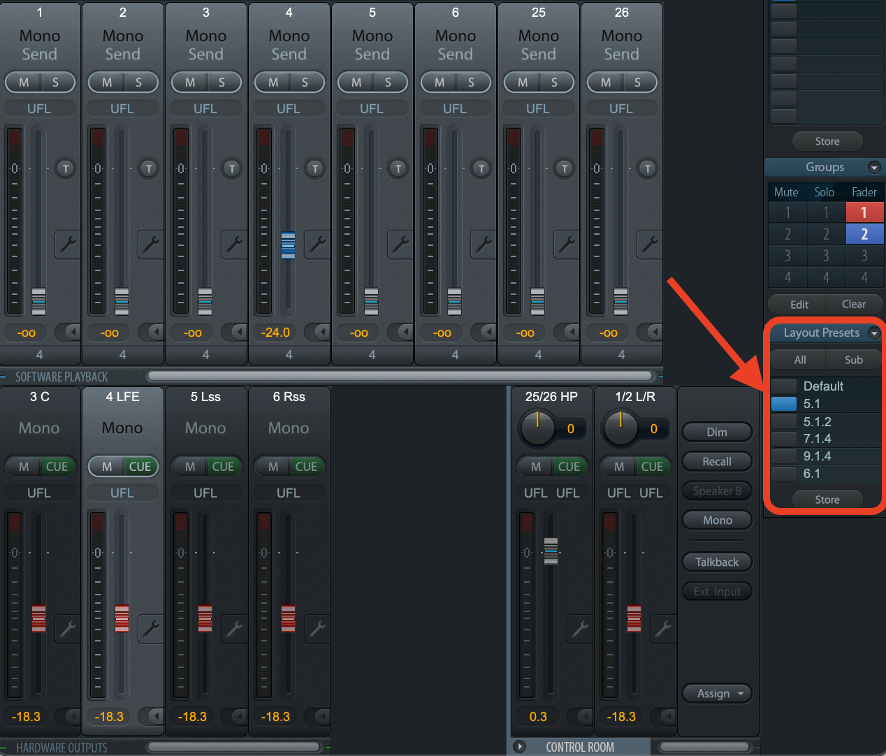

MPAP ROOM GUIDES
TotalMix Guide
TotalMix FX manages surround sound and monitoring for the Research Lab. By default, it simply routes MADIFace outputs 1–23 directly to speakers 1–23. As such, you'll rarely need to adjust more than volume, but this guide outlines additional features you may use.
Table of Contents
Getting Started with TotalMix
Make sure you have completed the First-Time Installation instructions to install the necessary drivers and software required for TotalMix.
TotalMix should look like this when opened. If not, ensure the TotalMix2025.tmws file is loaded.

Mixer Overview
In the mixer window, you'll see two rows of faders:
- Software Playback (top row): these represent audio streams coming from your computer (e.g. DAW outputs, Atmos channels from Apple Music).
- Hardware Outputs (bottom row): these represent the actual physical outputs to the speakers and headphones.
When you select a Hardware Output channel from the bottom, the Software Playback faders above show the submix to that output. You'll notice that only Software Playback 1 and 2 feed Hardware Outputs 1 and 2, and only Software Playback 3 feeds Hardware Output 3, and so on. This is because we want a 1:1 configuration; setting a track in our DAW to output 14 will logically play the signal on speaker 14. As such, it is unlikely you will ever want to mess with the Software Playback submixes. Instead, you should handle all actual routing in your DAW, or Audio MIDI Setup speaker configuration.
Hardware Inputs are hidden in our template because the software doesn't control the level sent to your DAW; it only routes the input directly to the selected hardware output. Since you should monitor inputs through your DAW anyway, showing them here would be redundant and potentially cause issues.
Controlling Level
Move the wheel on the ARC USB remote. By default, this controls the level of all speakers at the same time. In TotalMix, you'll notice all faders (except for the Headphones) move together. These red colored faders are grouped, allowing the wheel on the ARC USB remote to control the level of the entire surround mix. It is unlikely that you will want to deviate from this behavior, but in order to change the level of individual speakers, you may disable grouping by un-selecting "1" from the Groups section on the right. The red faders will turn grey, and be able to be changed individually. Re-select "1" to reactivate the group and control the overall volume again.

Grouped Hardware faders in Red

Fader Group 1 Selected
The Software Playback channels default to -24 dB because the Research Lab is VERY LOUD. If you need to adjust this calibration, the Software Playback channels are automatically grouped on Fader Group 2 to make the process easier. Raising any Software Playback fader will raise the rest of the faders in other submixes, even though those submixes are not visible. Ensure the faders are colored blue and Fader Group 2 is illuminated in the Groups section.

Grouped Software Playback Faders in Blue

Fader Group 2 selected
Layouts
In the Layout Presets section on the right, you can filter the view to show only the channels relevant to a specific format. This doesn’t affect routing—it simply limits the display to the channels you’re working with.

Pictured: 5.1 layout